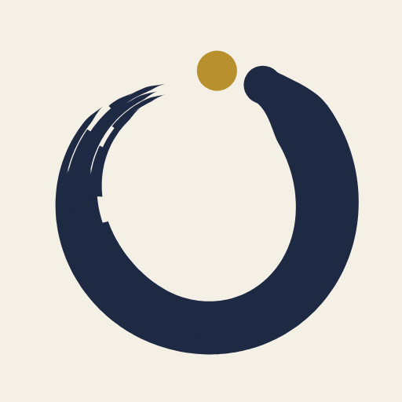

Kinmichi
金道 · the golden pathA calm, open-source habit tracker for Android, built around the day after you slip, not the perfect streak. Every habit gets a bad-day version, a missed day is followed by a "never miss twice" nudge, and comebacks are drawn in gold.
- Material You design with seven palettes, light and dark
- Home-screen widgets and a Wear OS tile and watch app
- 10 languages, with Google, GitHub and guest sign-in
- Free and open source under the MIT license, no ads